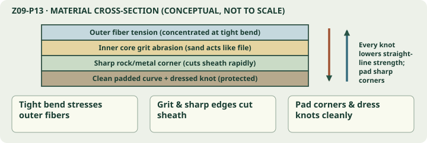

Z09-P13 · Tools and construction · New manuscript
Recognize why knots, wet fibers and sharp edges cut rope strength
Account for real-world strength reductions caused by tight bends, moisture, grit and sharp edges in camp rigging.
When it applies · Every tensioned tarp ridgeline, gear haul line, tie-down or lash assembly using utility rope or cord.
Equipment · Utility rope, smooth attachment padding (cloth/bark guard where lawful) and visual inspection habit.

Actions
- Recognize that EVERY knot reduces straight-line rope strength because tight bends concentrate stress unevenly across outer versus inner fibers—tighter radii weaken cord more sharply.[K09, K06]
- Recognize that embedded sand grit acts like internal sandpaper inside braided rope fibers under cyclic tension, while wet nylon and sharp metal/rock edges accelerate cut-through failure.[K09, K08]
- Pad or route tensioned lines over smooth rounded surfaces rather than sharp rock corners, sheet-metal edges or rough dry bark grooves, and shake grit off lines before stowing.[K09, K08, ED]
Failure recognition · Running a tight synthetic guyline directly across a sharp granite edge in high wind, sawing through the sheath within an hour.[K09, E16]
Verify · Confirm knots are dressed neatly without twisted crossings, sharp contact corners are avoided or padded and lines stay clean of embedded grit.[K09, ED]
Stop or change course · Retire any line with crushed flat spots, cut sheath strands or heat-glazed burn marks before applying tension.[K09, K08]
Evidence and editorial notes
- E16 · NWS · Wind Safety (current web edition)
- Section: Wind Safety > High Wind Hazards · Conditions: Forecast or developing high winds, squalls, or straight-line winds
Support: High winds topple trees, loft debris, and stress lightweight shelters beyond fabric and anchor limits; relocate out of timbered fall zones and into substantial shelter before gusts peak.
Limitations: Tents and tarps lack standardized wind-speed survival guarantees across soil types and pitch angles. · Conflicting evidence: None; avoids unvalidated mph ratings for improvised pitches.
Editorial note: Drives high-wind shelter inspection, guying limits, and abandonment thresholds. · Specialist reviewer: Weather safety and shelter equipment
Primary source · checked 2026-11-24 - K06 · NPS · Forces and Tools (current web edition)
- Section: Forces and Tools > Simple Machines and Mechanical Advantage · Conditions: Levers, wedges, inclined planes and friction mechanisms
Support: Simple machines trade force for distance (levers, wedges, pulleys); friction, alignment and material strength limit real-world output below ideal ratios.
Limitations: Ideal mechanical advantage ignores friction losses and breaking strength of ropes or anchors. · Conflicting evidence: None; clarifies physical trade-offs without implying engineered load ratings.
Editorial note: Anchors mechanical-advantage, wedge-splitting and pulley/rigging limit cards. · Specialist reviewer: Mechanical engineering and rigging safety
Primary source · checked 2026-11-24 - K08 · OSHA · Hand and Power Tools (OSHA 3080) (agency PDF)
- Section: Personal Protective Equipment and Work Area Control · Conditions: Cutting, splitting, striking and rigging operations
Support: Maintain stable footing, eye and hand protection appropriate to flying chips or snapped cordage, and clear bystanders outside the swing or snap-back zone.
Limitations: Field kits often lack shop PPE, requiring slower conservative technique and lower-energy methods. · Conflicting evidence: None; drives snap-back and work-circle exclusion zones in Z09.
Editorial note: Enforces conservative work circles and snap-back clearance. · Specialist reviewer: Tool safety and occupational safety
Primary source · checked 2026-11-24 - K09 · USDA Forest Service · Handtools for Trail Work (0523-2810-MTDC) (agency handbook)
- Section: Cordage, Anchors and Rigging Boundaries · Conditions: Non-life-safety camp lashing, tarps, haul lines and tie-downs
Support: Cordage strength drops significantly at knots, sharp bends, wet fibers, UV exposure and abrasion; inspect fibers before loading and never use unrated camp cord or improvised bindings for life-safety suspension or climbing.
Limitations: No universal breaking strength applies to natural plant fibers or weathered salvaged rope. · Conflicting evidence: Counters folklore claims equating improvised cordage to rated climbing rope.
Editorial note: Separates camp utility lashing/hauling from life-safety rigging. · Specialist reviewer: Rigging safety and materials mechanics
Primary source · checked 2026-11-24
Source lineage · USFS cordage boundaries and mechanical safety; new manuscript · Classification · New manuscript.